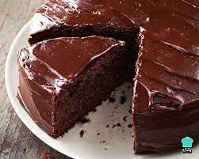
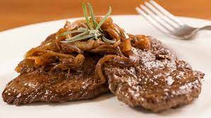

Uma deliciosa receita de torta de frango como você nunca viu
Clique para ver a receita

O melhor bolo de chocolate está aqui
Clique para ver a receita
Sorvete caseiro, faça você mesmo
Clique aqui para ver a receita

Aprenda a fazer o melhor mocatino de todos
Clique aqui para ver a receita

Carne macia e acompanhamentos deliciosos
Clique aqui para ver a receita

A receita perfeita para a serta feira santa
Clique aqui para ver a receita

Um bife como nunca visto
Clique aqui para ver a receita
Formularios
Para auxiliar em futuras publicações, responda com seus dados abaixo, eles irão auxiliar nas estatisticas do site
Sobre mim
Sou um estudante do curso de TADS no campus CCT da UDESC
Estou criando essa pagina como tarefa da matéria de Sesenvolvimento de Aplicações na Web
A motivação para o tema foi a baixa criatividade para a escolha de algum outro tema para trabalhar sobre, mas convenhamos, quem não gosta de comoda? Ao criar as páginas me sinto cada vez mais faminto e com agua na boca, além de aprender receitas realmente úteis e saborosas.